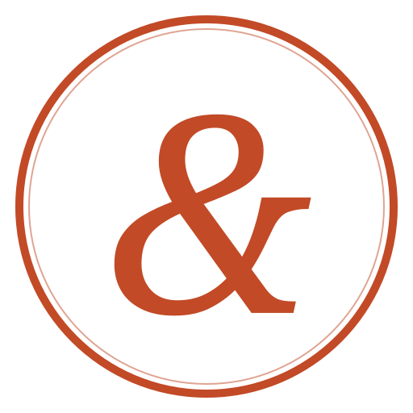
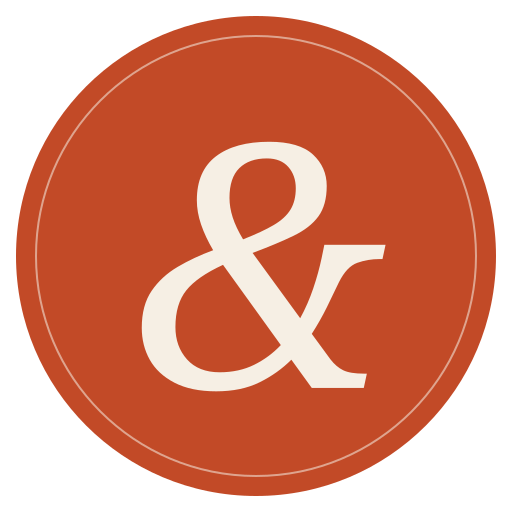
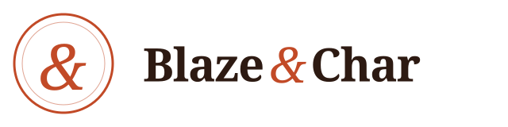
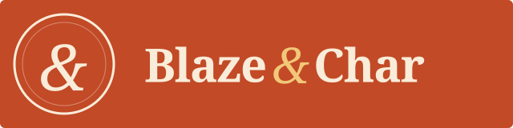
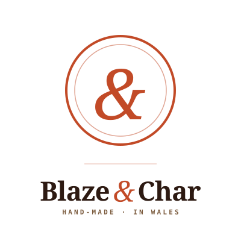
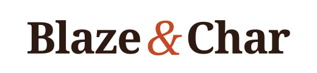

Four lockups, one brand. Monogram for tight spaces; full horizontal logo for most uses; stacked for square surfaces; wordmark alone for places where the monogram is already on-panel. Italic ampersand in Fraunces is the flourish that ties every variant together.
Circular medallion with Fraunces italic ampersand. Use at small sizes (favicon, social avatar, pouch corner stamp) or anywhere the wordmark would feel redundant. Echoes the "Hand-made in Wales / Cymru" stamp already on the pouch for visual continuity.

Standard — tandoori red on cream. The 90% use case.

Reversed — cream on solid tandoori red. For dark or coloured backgrounds.
Monogram + wordmark, side-by-side. For site headers, email signatures, letterheads, invoice footers, shipping labels — anywhere the full brand name needs to read first.

Standard — for cream and other light backgrounds.

Reversed — cream on solid tandoori red, with a gold-amber ampersand accent.
Monogram above, wordmark below, with a mono kicker for "Hand-made in Wales." Use for Instagram avatars (expanded profile), business cards, product tags, swing tags, and anywhere that wants a badge feel.

Stacked — full brand, all cues, fits a square.
At avatar size — business card, sticker, product tag.
For the pouch (where the circular Cymru stamp is already doing the monogram's job), for pull quotes in a brand magazine, or wherever the logo needs to read like a signature rather than a stamp.

Just the name, just the italic ampersand. Equivalent to typing "Blaze & Char" in Fraunces 700 with the & in italic 400 at 1.08×.
✗ Don't skew, tilt, or add glows/shadows to the mark.
✗ Don't drop the standard version onto a coloured background — use the reversed version.
✗ Don't hand-compose the monogram + wordmark. Use blaze-logo-horizontal.svg instead — it's already locked up.
All files are SVG — they scale losslessly from 16px to billboards. If you need PNG exports for platforms that don't accept SVG (older email clients, some print vendors), open any SVG in a browser at the target size and screenshot, or ask me to build a PNG pipeline.